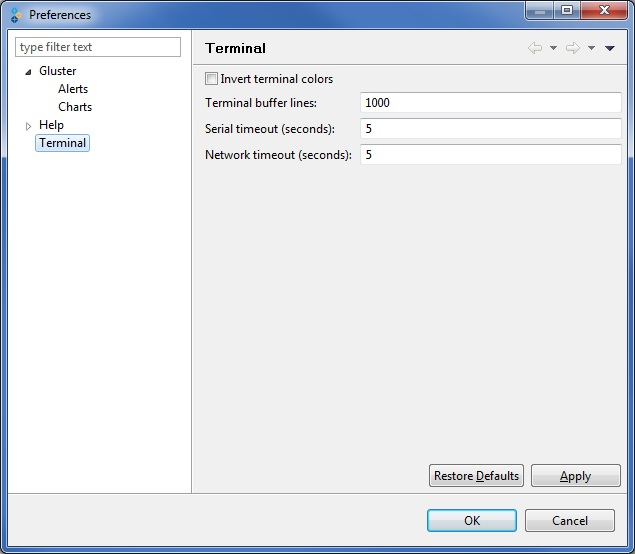

Setting Terminal Preferences
You can customize the terminal window as described in this section.
To set the display of the charts, perform the following:
- Choose Edit > Settings > Terminal
The Preferences window displays the Terminal page on the right pane of the window.

- Type the limit of terminal buffer lines in the Terminal buffer lines field.
- Type the value of the serial timeout in the Serial timeout field.
- Type the value of the network timeout in the Network timeout field.
- Click Apply.
- Click OK to exit the Preferences window.